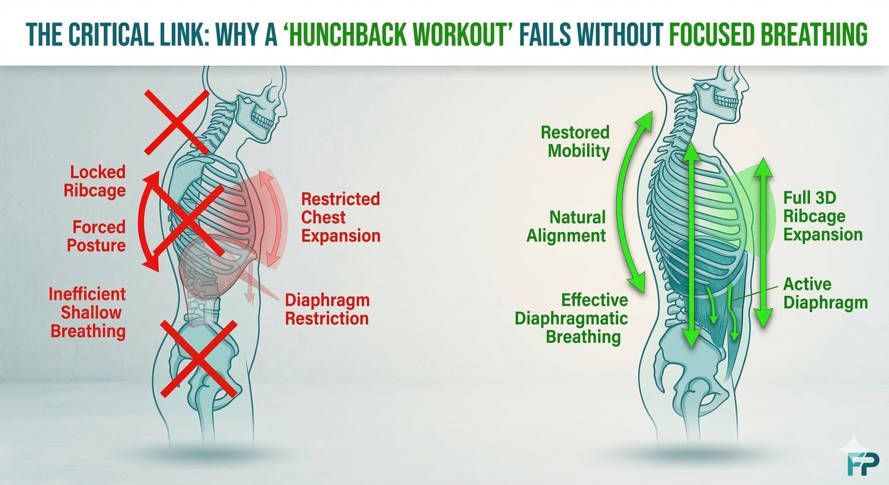
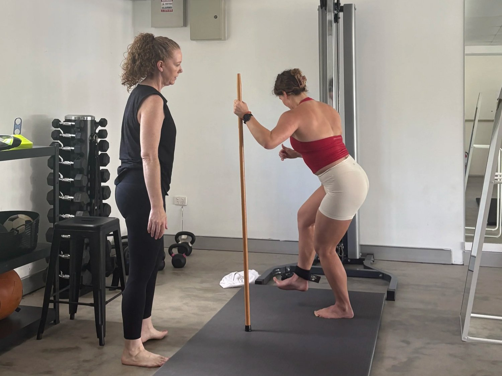

If you spend your day at a desk in Brisbane, you’ve likely looked in the mirror and felt frustrated by your neck and upper back posture. You might have searched for hunchback treatment exercises or a hunchback workout to "straighten up," but found that as soon as you stop concentrating, your shoulders slump right back forward.
At Functional Patterns Brisbane, we see this constantly. People try hunchback correction exercises like "squeezing the shoulder blades" or stretching the chest, but these are temporary fixes for a structural problem. If you want to know how to fix kyphosis long-term, you have to look at how your ribcage and pelvis are stacked.
The Problem With Traditional Hunchback Exercises
Most back exercises for hunchback treat the spine like a series of isolated parts. The common advice is to strengthen the "weak" upper back and stretch the "tight" chest.
However, your hunch isn't just a "tight muscle"—it's a compensation. If your ribcage is compressed and your pelvis is tilted, your upper back has to round to keep your head over your center of mass. Doing hunchback exercises in isolation is like trying to straighten a bent tower by only fixing the top floor.
Why a "Hunchback Workout" Needs to Focus on Breathing

A novel aspect of hunchback treatment exercises that most systems miss is the role of the diaphragm. When you have a rounded upper back, your ribcage is often locked in a "downward" or "collapsed" position.
This makes it impossible to breathe into your upper back, which further reinforces the hunch. Instead of just doing exercises for humpback that pull your shoulders back, we focus on re-expanding the ribcage. When the ribcage can expand, the spine has the space it needs to sit upright naturally. This is the difference between "forcing" posture and actually restoring it.
Structural Change vs. Temporary Relief
You may have tried hunchback cure exercises that feel good for twenty minutes but don't hold under load. At our Bulimba studio, we don't believe in "reminding" yourself to stand up straight. We believe in building a body that cannot help but stand up straight.
We move beyond standard hunchback correction exercises by integrating:
-
Pelvic Neutrality: So your spine has a stable base to sit on.
-
Ribcage Organisation: To decompress the thoracic spine.
-
Gait Integration: Training your body to maintain this new posture while you walk and move through your day.
Start Your Morning Right: Rise & Realign

If you’re tired of feeling "stuck" in a rounded position and want a structured path to better neck and upper back posture, our Rise & Realign class is the perfect solution.
Led by our practitioner Skye, this 6-week progressive program is designed to help you start your day moving better. We focus on the exact biomechanical principles needed to address kyphosis—not through random workouts, but through structured, coached movement. It’s the ideal environment for early risers in Brisbane to realign their structure before the workday begins.
The next series starts Wednesday, March 18th at 6:00 am.